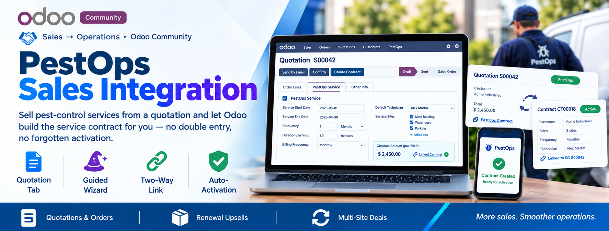
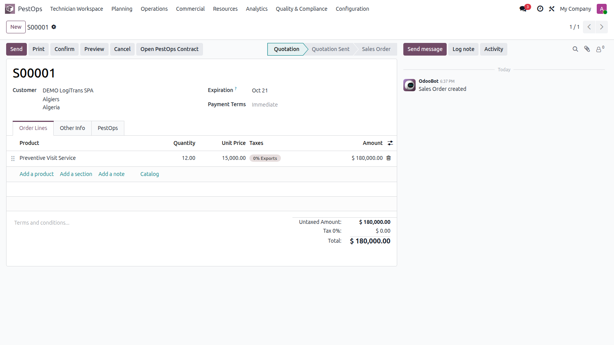
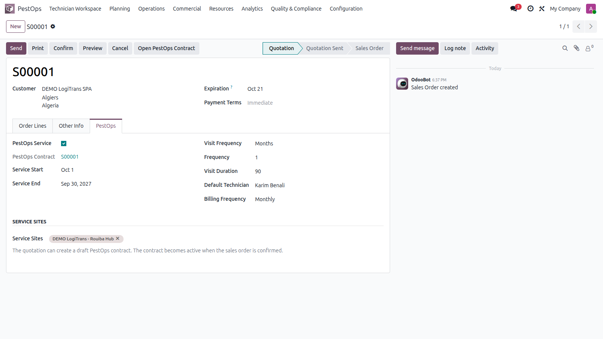

💼 Sales → Operations · Odoo Community
📝 Quotation Tab 🧙 Guided Wizard 🔗 Two-Way Link ✅ Auto-Activation


Quotation with the PestOps service tab and linked contract.
Your sales team keeps selling in Odoo Sales. Operations receives a ready-to-activate contract with sites, frequencies and technician already filled in.
🧾 Quotations 📦 Sales Orders 🔄 Renewal Upsells 🏢 Multi-Site Deals
Tick PestOps Service on any quotation and describe the service: start and end dates, visit frequency, visit duration, default technician, billing frequency and the service sites (filtered to the customer automatically).

Service dates, frequency, technician and sites configured on the order.
One click opens the creation wizard pre-filled from the order — adjust, confirm, and the draft contract with its per-site lines is created and linked. From then on the link works both ways, and confirming the sales order automatically confirms the contract, which immediately starts visit planning.
| Odoo Version | Community |
|---|---|
| License | LGPL-3 |
| Module Type | Extension (requires PestOps Core) |
| Dependencies | pestops_core, sale_management |
| External Services | None required |
📧 imazighenapps@gmail.com — fast response 🔄 Free Updates